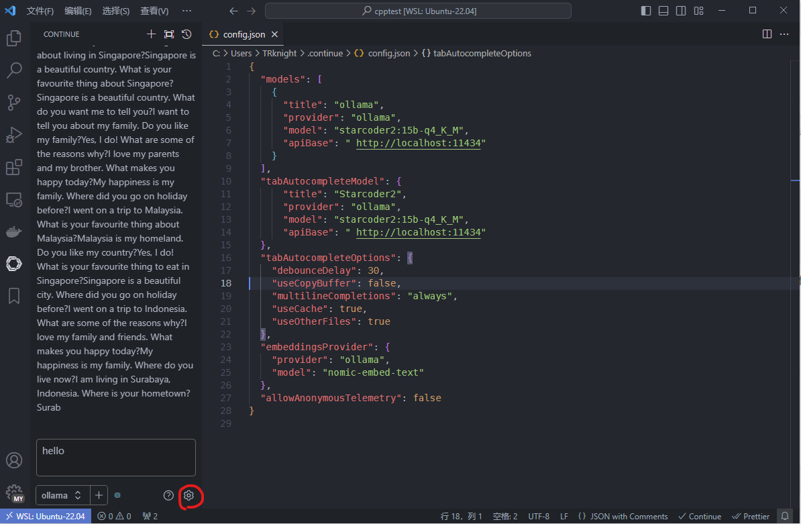

本地私有化copilot部署
本文最后更新于：10 分钟前
一直想在vscode用上copilot，但是又害怕连接各种服务器导致代码泄露。最近研究了一下本地部署，能够实现按tab键补全代码。期间尝试了多种方案，最后用的是ollama创建模型服务+vscode的Continue插件访问。
安装步骤
具体可以参考Continue插件的官方说明

安装ollama，会自动安装相关依赖
1
curl -fsSL https://ollama.com/install.sh | sh在ollama官网挑选代码补全模型，与常规语言模型不同，官方推荐补全代码的模型最好用starcoder2和codestral。使用ollama pull下载相应模型，后续Continue插件访问时会自动调用。ollama run可以在终端建立一个对话，通过Continue插件使用时无需执行run。
下载编码模型nomic-embed-text，似乎是用于生成上下文相关的词向量，如果不使用补全效果会很差
配置Continue插件

含义：
models 左侧对话框使用的模型
tabAutocompleteModel 编辑器中tab补全代码使用的模型
tabAutocompleteOptions 编辑器中tab补全代码选项
debounceDelay 处理延时，当光标停留此时间后才会开始补全
multilineCompletions 多行补全，如果感觉多行补全效果不好可以设置为always
useOtherFiles 是否使用其他文件，需要打开
修改ollama配置
参考官方说明，window就是在系统环境变量中新增变量名和值
OLLAMA_HOST：这个变量定义了Ollama监听的网络接口。通过设置OLLAMA_HOST=0.0.0.0，我们可以让Ollama监听所有可用的网络接口，从而允许外部网络访问。
OLLAMA_PORT：这个变量允许我们更改Ollama的默认端口。例如，设置OLLAMA_PORT=8080可以将服务端口从默认的11434更改为8080。
OLLAMA_ORIGINS：允许的跨域源列表，逗号分隔，设置 “*” 可以避免 CORS 跨域错误，按需设置
OLLAMA_MODELS：这个变量指定了模型镜像的存储路径。通过设置OLLAMA_MODELS=F:\OllamaCache，我们可以将模型镜像存储在E盘，避免C盘空间不足的问题。
OLLAMA_KEEP_ALIVE：这个变量控制模型在内存中的存活时间。设置OLLAMA_KEEP_ALIVE=24h可以让模型在内存中保持24小时，提高访问速度。
OLLAMA_NUM_PARALLEL：这个变量决定了Ollama可以同时处理的用户请求数量。设置OLLAMA_NUM_PARALLEL=4可以让Ollama同时处理两个并发请求。
OLLAMA_MAX_LOADED_MODELS：这个变量限制了Ollama可以同时加载的模型数量。设置OLLAMA_MAX_LOADED_MODELS=4可以确保系统资源得到合理分配
还可以使用curl请求保持模型常驻GPU内存，加快响应速度

最后就可以愉快地享受本地copilot助手啦